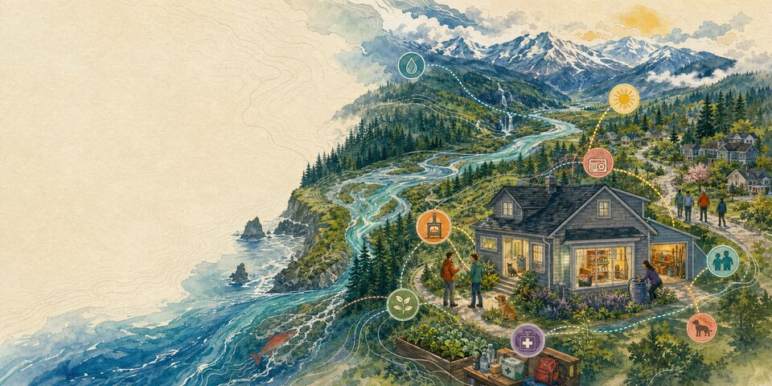

Water
Where will it go? Can you lift it? What happens when storage runs out or local water becomes unsafe?
Keep water available
Keep Life Going
Water from the tap. A working toilet. Medication kept at the right temperature. A way to breathe, move, communicate, and care for the people and animals who depend on you.
Ordinary functions
Each subject begins with the function, the life it serves, and the constraints a household actually has.
Where will it go? Can you lift it? What happens when storage runs out or local water becomes unsafe?
Keep water availablePlan for hygiene, waste, and handwashing when water or wastewater service is interrupted.
Protect sanitationStart with the room, clothing, shade, safe heat, sleep, power needs, and the place you could go.
Keep a safe temperatureSmoke, ash, heat, cold, generators, and building systems can all change indoor air.
Protect indoor airWrite down medication names, doses, and prescribers. “The small white one” is a poor description.
Protect food and medicationChoose contacts, meeting places, and a low-bandwidth way to say where you are.
Plan communication and reconnectionKeep identity, insurance, account, property, and medical information findable without carrying everything.
Make records findableTime, mobility, transit, fuel, children, animals, weather, and a locked building can all change the same departure.
Fit the route to the personCurrent orders and conditions decide the moment. Earlier arrangements make either choice less difficult.
Prepare both pathsUse backup power where it changes a decision, and know which official source you will check next.
Keep light and information availableMake food, medicine, equipment, authority, transport, and one willing backup person part of the plan.
Make care portableFit matters
A renter cannot change every building system. A household without a vehicle cannot use a vehicle-based plan. Someone who depends on powered medical equipment needs more than a reminder to charge a phone. Storage, money, health, work, language, caregiving, transport, and trust belong in the main guidance.
Begin with one useful move. A few bottles will not cover a long outage, but they are more useful than an ideal supply you have nowhere to keep.
Reviewed July 25, 2026